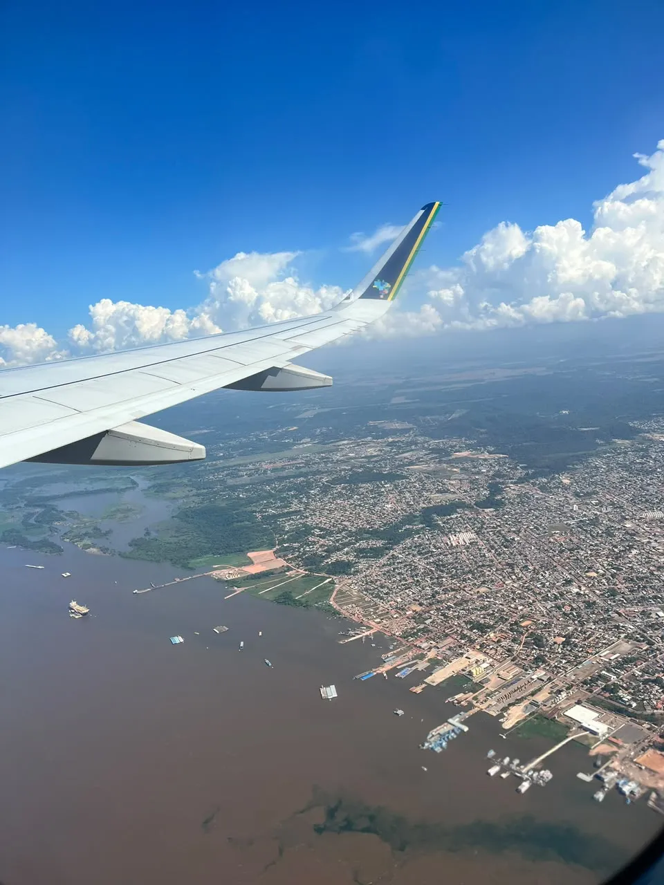
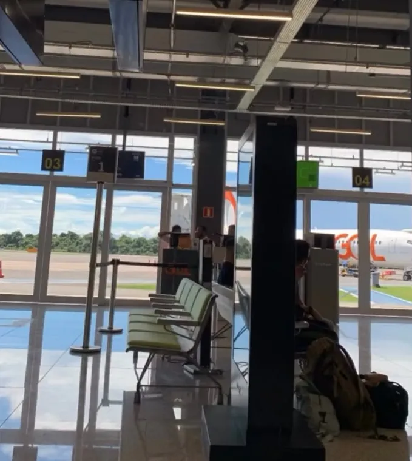
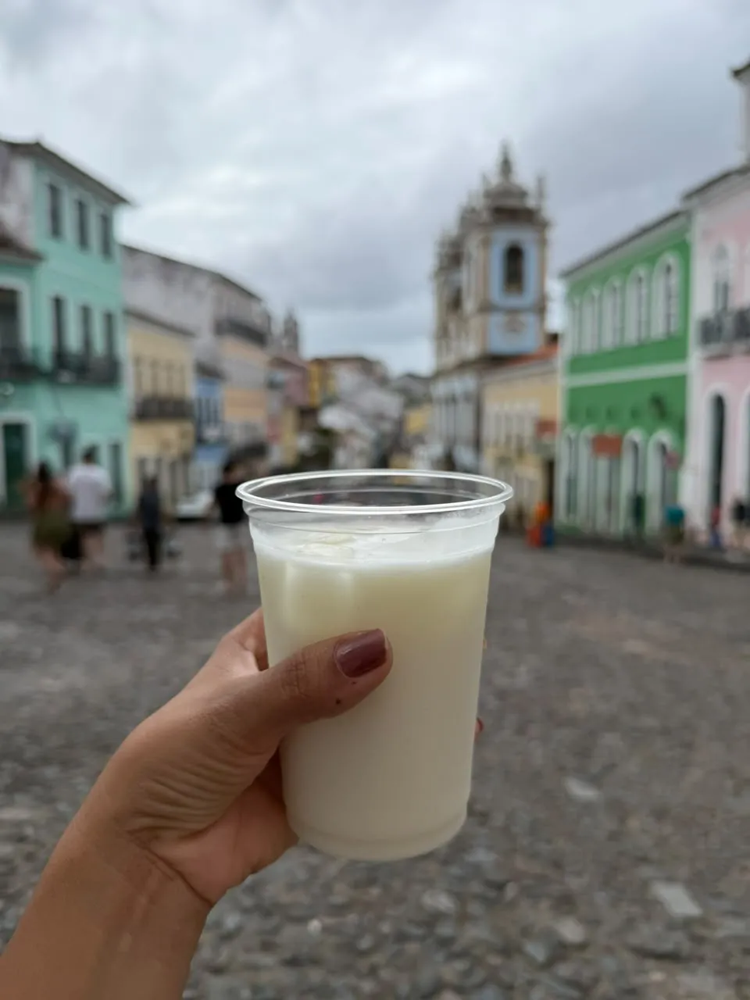
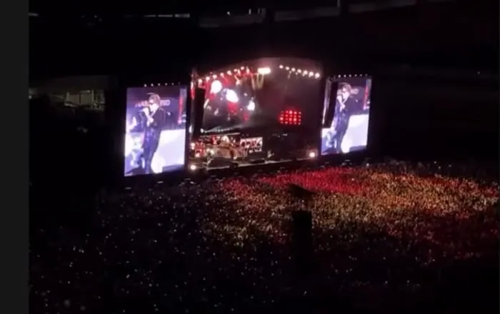

01 Voo
A vista que só a janela oferece
Rios, nuvens e cidades inteiras passando lá embaixo. A viagem começa antes do destino.
Agência de viagens
Passagens aéreas e pacotes de viagem, planejados em Santarém com economia e segurança.

01Descubra
Fotos reais de quem já viajou com a Quero+. Passe o mouse (ou toque) para conhecer cada lugar.
02Viva
O embarque, a janela, o primeiro sabor, o show tão esperado. Momentos reais registrados pela agência e por quem viajou com ela.
01 Voo
Rios, nuvens e cidades inteiras passando lá embaixo. A viagem começa antes do destino.

02 Embarque
Passagem emitida, tudo certo e só a espera boa pela chamada do voo.

03 Sabores
Do queijo coalho na orla ao gelado no Pelourinho: viajar também é provar.

04 Eventos
Clientes realizando sonhos no Estádio do Mangueirão, em Belém.
05 A bordo
Cotação, emissão e acompanhamento com quem cuida de cada detalhe.
03Conheça
Nossa história
A Quero+ Viagens é uma agência de viagens de Santarém, no Pará, que cuida de passagens aéreas e pacotes de viagem, para o mundo todo. A ideia é simples: você traz o sonho, e a gente planeja cada detalhe com economia e segurança.
“Amo ver meus clientes/amigos realizando seus sonhos, e ainda fazer parte dessa conquista.”
Entre no grupo e fique por dentro das melhores ofertas de viagens para o mundo todo.
04Lembre
“Tranquilo aguardando o embarque com a @queromaisviagensstm ✈️”
Cada foto aqui é um cliente que trocou o "quero viajar" pelo "já vivi".
Fale com um especialista pelo WhatsApp